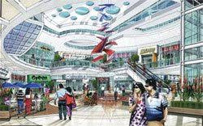
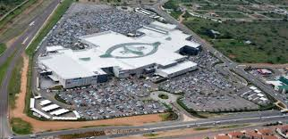

PINE CITY MALL – The shopping gem of our people.
Mall of the North is a Super Regional shopping centre in Polokwane and has been developed by Resilient Properties Income Fund, Moolman Group and Flanagan & Gerard Property Development & Investments. Our offers includes strong fashion and homeware brands, many of which have been introduced to the region through us, and we also boast the most diverse restaurant mix in the region. We successfully serve the entire Limpopo region including Polokwane, Phalaborwa, Tzaneen, Louis Trichardt, Mokopane and to the cross-border shoppers from Botswana and Zimbabwe.


Our majestic building has lots of natural light, beautiful finishes and architectural features which creates the perfect backdrop for showcasing national brands. We are anchored by Woolworths, Pick n Pay, Checkers, Game, Edgars and Ster-Kinekor. Nationals include Truworths, Foschini, Mr Price, Dis-Chem and Clicks. Anchors are supported by a full range of fashion, footwear, sportswear, furnishings, home decor and healthcare stores. The tenant mix also includes exciting international brands H&M, Pringle of Scotland, Lacoste and Levi’s and international retailers Cotton On and Factories.
Banks include Nedbank, Standard Bank, ABSA, FNB, Capitec, African Bank and Old Mutual. We also boast a strong entertainment offering with 6 Ster-Kinekor cines and The Fun Company which offers an eight lane bowling alley, trampoline park, bumper cars, 4-D theatre and a gaming arcade. Services include: wheelchair facilities, toilet facilities for disabled shoppers, unisex parent child bathrooms, unisex baby changing rooms, as well as free Wi-Fi for customers.